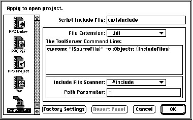

Last issue's column discussed various ways of using ToolServer. I looked forward to
deeper integration of MPW scripts into other development systems, in a stirring plea
that must have brought tears to the eyes of many an overly sensitive reader. In this
column, I'll show just how self-fulfilling a prophecy can be: I'll explain how to use a
generic ToolServer plug-in compiler with the popular Metrowerks CodeWarrior
development system.
CodeWarrior already comes with ToolServer support in the form of an integrated
Worksheet window, similar to the MPW Shell Worksheet. Simply choose Start
ToolServer from the Tools menu and you can issue all kinds of shell commands. It's like
a miniature MPW Shell inside CodeWarrior. What more could you ask for?
Ten bonus points for reading skills if you could tell that that wasn't really a rhetorical
question. The Worksheet is useful but it falls short of full integration. True, you can
execute a Make command from CodeWarrior's Worksheet, but it would be even better
to integrate MPW tools and scripts into the default CodeWarrior build sequence.
Let's say you have a SOM build -- that is, you're using IBM's System Object Model as
implemented on the Macintosh in the form of "SOMObjects for MacOS(TM)". Before too
long, it's likely that the current preprocessing approach to SOM will be just a fading
(though still traumatic) memory, and that CodeWarrior and MPW will have
direct-to-SOM compilers. For now, though, building with SOM requires running MPW
tools and scripts to generate include files which are then processed by the C or C++
compiler.
Error prevention is one of the basic principles of user friendliness. You can invoke the
SOM compiler from a makefile and run it in the CodeWarrior worksheet before you
build, but if you're like me, short-term memory loss from a misspent youth will
cause you to forget to run the makefile from time to time, leading to bizarre errors
and gratuitous hair-tearing behaviors. MPW makefiles provide another rich source of
errors by requiring you to track your own include files.
It's more convenient to simply give the single menu command Make than to bring up
the Worksheet, enter "BuildProgram MyBuildFile", wait for the build to finish, and
then give the Make menu command. One could only wish that CodeWarrior had a
built-in SOM compiler.
Thanks to CodeWarrior's new plug-in compiler architecture (available starting with
CW7), you can add build rules that invoke ToolServer scripts automatically to compile
".idl" files, or any other type of file. I've created a generic ToolServer plug-in for
CodeWarrior (found on this issue's CD) that allows you to set up different command
lines for different filename extensions. It will automatically track include files as
well, if you want it to. It should be powerful enough for most applications, but if you
need something different, you can take the source code and hack it endlessly to your
own nefarious purposes.
To install the plug-in compiler, put the compiler file ToolFrontEnd into the Compilers
folder of the CodeWarrior Plugins folder of your CodeWarrior application folder, and
the preferences file ToolFrontEnd Panel into the Preferences folder of CodeWarrior
Plugins. To set it up, first decide which filename extensions you want to run through
ToolServer; in this example, we'll be doing the ".idl" files used by SOM. Give the
Preferences menu command in CodeWarrior, go to the Targets panel, and attach the
ToolFrontEnd compiler to source files of the appropriate type and extension.
Finally, go to the new ToolFrontEnd panel in Preferences and enter the command line
you want to execute for files of this extension. The ToolFrontEnd panel is shown in
Figure 1. Like all software, this is a work in progress, so it may look slightly
different by the time it reaches you.

Figure 1. The ToolFrontEnd preferences panel
The pop-up menu allows you to enter different commands for different filename
extensions. Bind each extension to the ToolFrontEnd compiler from the Target panel.
The Script Include File will be executed before your command line. This lets you set up
variables and aliases that may be useful for your scripts and tools. The same include
file is used for all filename extensions. The include file can be anywhere in the
project's access paths. Here I'm using an include file named "cwtsinclude," which sets
up a few handy variables. You don't need to specify any include file if you don't want
one.
Your source file can be preprocessed to find include files. I've provided a default
preprocessor that deals with #include specifications. You can add other
preprocessors -- see the documentation and sample code that come with the software.
Each include file will be added to CodeWarrior's internal list of dependencies for the
source file, so the source file will automatically be rebuilt when an include file
changes. If you don't want to scan for include files, choose None from the pop-up menu.
All include files should be in the CodeWarrior project's access paths. The project's
access paths will be combined into the IncludeFiles variable, prefixed with the Path
Parameter shown in the panel. This variable is available to all scripts executed from
the plug-in.
All commands will be executed in the ToolServer context, so they'll use any startup
scripts you've installed. See the notes from last issue's column about minimizing
dependencies, though; all your requirements should be fulfilled by files you explicitly
execute or by the Script Include File specified in the panel. Otherwise you'll run into
configuration synchronization problems when restoring archived builds or sharing
sources with your team members.
When the plug-in compiler executes scripts, ToolServer's current directory will have
been set to the folder containing the project file. The following variables will be set
up:
Generally speaking, you'll probably want to create a front-end script for the plug-in
compiler, rather than enter a raw MPW command line in the panel. This allows you to
specify any number of parameters, redirections, and so on in a script file without
worrying about the text editing limits in the modal dialog. The command line you
specify can be up to 255 characters long. The SOM compiler has a lot of options, so I've
put all the ones I use into a script file named "cwsomc."
All diagnostic output will appear in the CodeWarrior error window. All standard
output will be ignored. Internal errors in the plug-in will appear as alerts.
Due to a limitation in the current plug-in API, CodeWarrior doesn't know about
dependencies involving compilers that put out source files. While the SOM compiler
will emit, for instance, a ".xh" include file that will be included by a ".cp" file later in
the build process, there is currently no way for CodeWarrior to know that the ".cp"
file depends on the ".idl" file from which the ".xh" file was generated. This will be
fixed in a future version of the API, and I'll add functionality to the ToolFrontEnd
plug-in to support this feature when it becomes available. For now, since
CodeWarrior compiles files in the order they appear in the project file, just put ".idl"
files above ".cp" files.
Source code is provided with ToolFrontEnd, so you can get a detailed peek at its insides
and mutate it to your own needs. A quick overview may be useful here, though.
ToolFrontEnd sends commands to ToolServer in the form of Apple events, as described
in last issue's column. It builds a command in memory that is a short multiline script
with semicolons separating the commands. The last command of this script is the one
you typed in the preferences panel. At the start of the script are commands that set the
four variables described above. The diagnostic output is extracted from the 'diag'
parameter of the reply Apple event returned from ToolServer, and the error code is
extracted from the 'stat' parameter. All this is done using a slightly modified version
of the sample code for communicating with SourceServer that I provided in this
column in Issue 23; the Apple event conventions of SourceServer and ToolServer are
much the same.
The plug-in was built by starting with the sample code provided with CodeWarrior. I
didn't have to make any large-scale changes to the structure -- Metrowerks deserves
kudos for the quality of their sample code and their clean API. There are two code
modules to be built, one for the preferences panel and one for the compiler itself.
Library routines are provided for common operations like registering a dependency
and getting a stored preferences record. The sample compiler already contained an
include file parser, which I broke out into a separate module to allow customization
for different file types.
Though I've shown just one example, many different things can be done with the
ToolFrontEnd plug-in. One of my friends is using a third-party version of the
UNIX(TM) tool yacc (Yet Another Compiler-Compiler), which is delivered as an MPW
tool. Thanks to this plug-in, he no longer has to switch between the MPW Shell and
CodeWarrior constantly. You could also define your own macro language to preprocess
your source files, or add your own original compilers. And of course, using ToolServer
scripts from the compiler is fully compatible with using the CodeWarrior ToolServer
Worksheet window for other tasks such as installing software. The Worksheet is also
useful for testing and debugging scripts you'll use with ToolFrontEnd. I haven't
provided a linker plug-in, but the API is similar and the compiler plug-in could
easily be adapted to this purpose.
With ToolFrontEnd, the friendliness of CodeWarrior and the power of MPW celebrate a
hieros gamos (or sacred union, if that's Greek to you). The fruit of this union is an
all-in-one development environment from which you can execute your entire build
process, no matter how complicated, without changing contexts or inviting errors.
Those whose souls are devoid of romance may prefer to contemplate the consequences of
increased productivity for their next performance review -- in either case, enjoy in
good humor and good health!
TIM MARONEY depends on calcium for his structural integrity and potassium for the
generation of axonic spikes in his nervous system. His recent reading includes
Mysticism and Philosophy by W. T. Stace, Popper Selections edited by David Miller,
Seth, God of Confusion by H. Te Velde, Abrahadabra by Rodney Orpheus, Hathor and
Thoth by Dr. C. J. Bleeker, Making Monsters by Rochard Ofshe and Ethan Watters, and
Soul Music by Terry Pratchett. A thoroughgoing nominalist, Tim doesn't believe in
either tables or natural laws, but his contract work at Apple remains stubbornly
limited by his desk and by the flow of time.*
Thanks to Rick Mann and Greg Robbins for reviewing this column.*